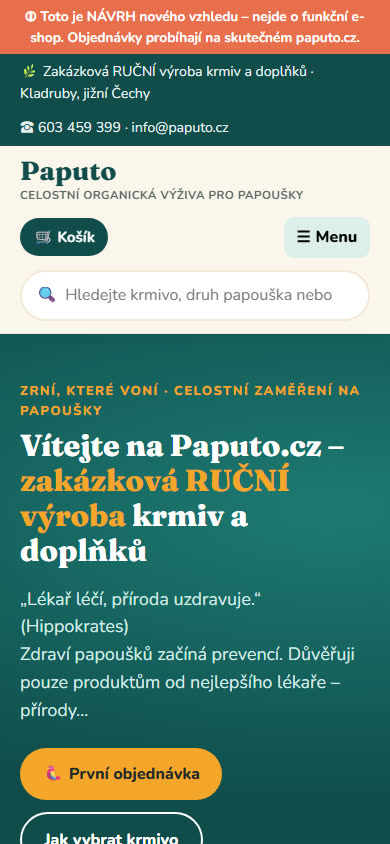
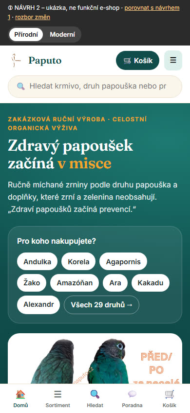
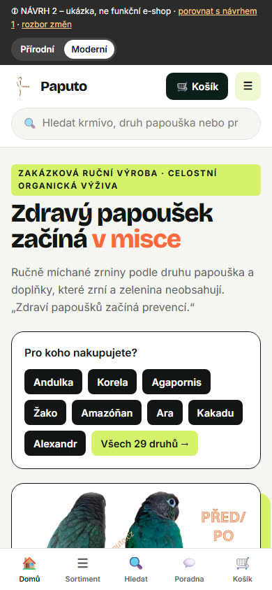
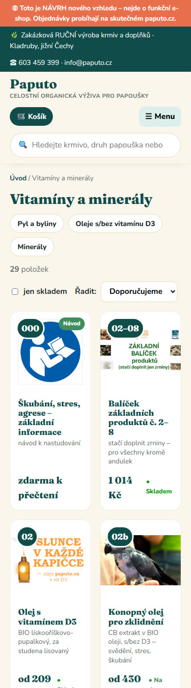
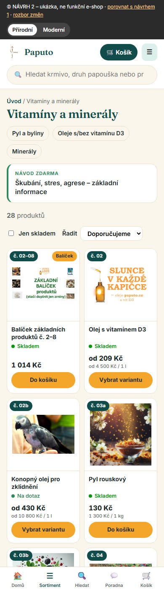
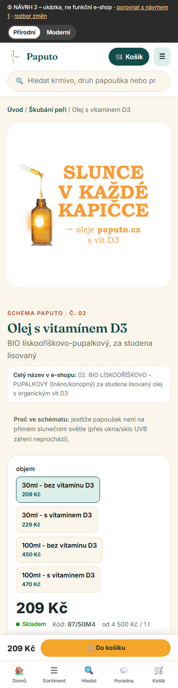
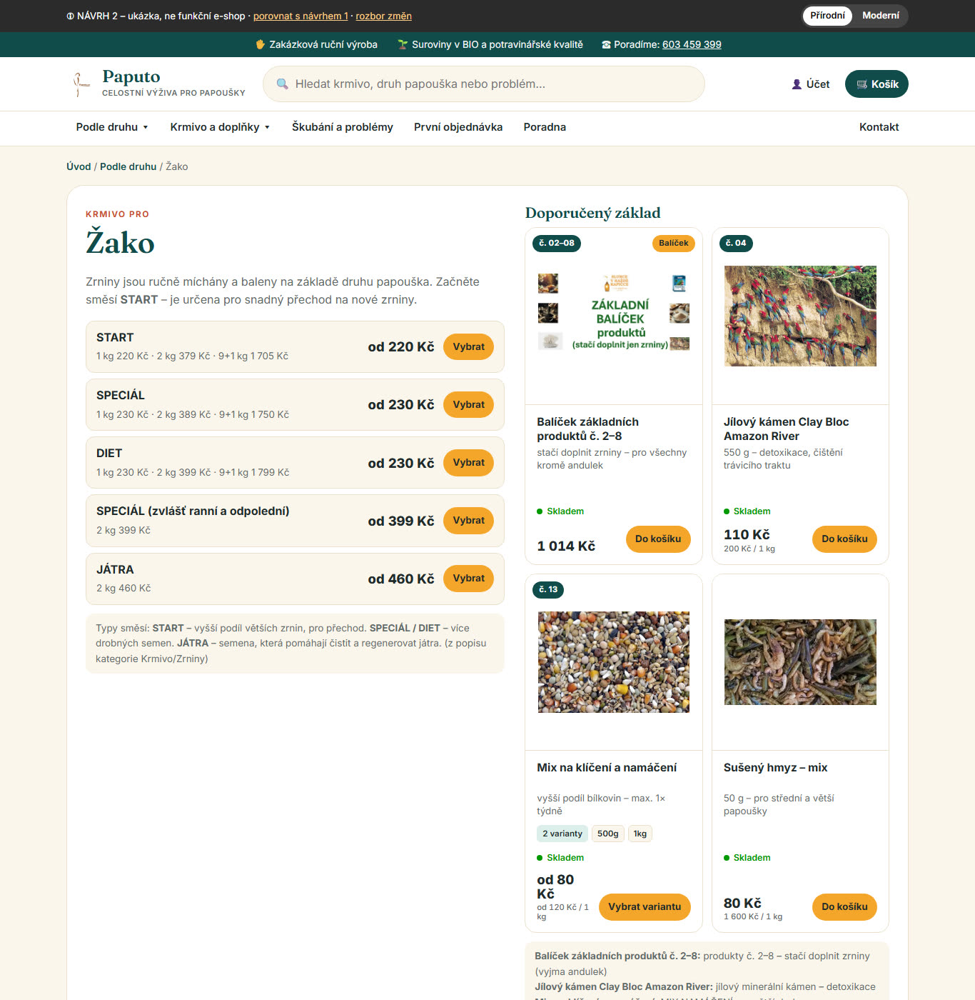

Kliknutím na obrázek ho zobrazíte v plné velikosti. Druhé kolo UX/UI. Návrh 1 zůstává beze změny na původní adrese. Návrh 2 má dvě barevné varianty, mezi kterými se přepíná v horní liště.






| Prvek | Návrh 1 | Návrh 2 |
|---|---|---|
| Fotka | různé poměry, ořez i roztažení | jednotný čtverec 1:1, bílý rámeček, fotka se nikdy neořízne ani nezdeformuje |
| Název | patkové písmo, různá výška | bezpatkové, max. 2 řádky, karty jsou stejně vysoké |
| Varianty | nebyly vidět | počet variant + nejčastější velikosti (např. „4 varianty · 30ml · 100ml“), vždy na jeden řádek |
| Dostupnost | malá, u ceny | samostatný řádek s barevnou tečkou (Skladem / Na dotaz / Objednáno) |
| Cena | jen cena | cena „od“ + měrná cena (Kč/kg, Kč/l) |
| Nákupní akce | chyběla | „Do košíku“ (jedna varianta) · „Vybrat variantu“ (více variant) · „Objednat“ (služby) |
| Štítky | číslo | „č. 02“ (schéma Paputo), „Balíček“, „Služba“ |
Poměr stran se pohybuje od 0,36 (úzká vysoká lahvička) po 2,45 (široký pruh zrnin). Proto návrh 2 dává všechny fotky do stejného čtvercového rámečku s bílým pozadím, celou a bez ořezu. Produkty na bílém pozadí s rámečkem splynou a ostatní fotky jsou vycentrované.
| Skupina | Produkty (ID) | Doporučení |
|---|---|---|
| Skutečné fotky balení – v pořádku | Mineral Bloc (108), Aroma Sanitol (204), Desinf (207), Fauna Parrot (156), Papendo (63), Healler B2 (421), Help balzám (400), Clay Bloc Mini (342) | vzor pro ostatní |
| Fotky suroviny – poctivé | bobule, byliny, semena, sušené ovoce, hmyz, koral (84), OrganiCaPAP MG (449) | ponechat; ideálně doplnit 2. fotku sáčku s etiketou |
| Ilustrační obrázky místo produktu | Multipap (99), Pyl (93), Kvasnice (72), Humac (78) – vypadají jako generované ilustrace; Olej D3 (87) je textový banner; papoušci místo produktu: Konopný olej (126), Clay Bloc Amazon River (102), OrganiCa andulky (120), Mix hmyzu (231) | vyfotit skutečný sáček/lahvičku (stačí telefon u okna na bílém papíře); ilustraci použít až jako 2. fotku |
| Možný problém s autorskými právy | Směs na míru (330) – na fotce je vodoznak National Geographic | vyměnit |
| Nízké rozlišení (pod 300 px) | Ananas (177), Cantaloupe (180), Papája (183), Mix hmyzu (231), Oregánový olej (159), Fauna Parrot (156) | nahrát větší fotky (min. 1000 × 1000 px) |
| Chybí fotka | Pivovarské kvasnice odhořčené (436), Markus Mühle (437) | doplnit; do té doby zobrazen čistý zástupný rámeček „Fotografie bude doplněna“ |
| Koláže | Balíček 2–8 (415), Andulka balíček (426) | funkční, ale v malé kartě nečitelné – lepší jedna fotka všech produktů vedle sebe |
| Piktogramy | návody 372, 397, 273 · konzultace (255 – otazník) · poukaz (336) | v návrhu 2 jsou návody přesunuty do Poradny, kde piktogram nevadí |
| # | Sekce | Proč tady |
|---|---|---|
| 1 | Hlavní sdělení + výběr druhu papouška + fotky před/po z e-shopu | zákazník hned vidí, co e-shop dělá, a jedním klikem jde na svůj druh |
| 2 | Pruh důvěry: ruční výroba, BIO, osobní poradenství, doprava od 150 Kč | odpovídá na „proč tady“; doprava je z dat e-shopu (DPD výdejní místo 150 Kč, osobní odběr 0 Kč) |
| 3 | První objednávka ve 3 krocích | nováček ví, jak postupovat |
| 4 | Schéma 8 kroků – u každého produktu je důvod, PROČ ho doporučujeme | v návrhu 1 nebylo vysvětleno; důvody jsou převzaté z textu „NÁVODY Paputo“, zdroj je pod sekcí uvedený |
| 5 | Řešení problémů (6 kompaktních dlaždic) | druhý nejčastější důvod návštěvy |
| 6 | Další produkty ze schématu (produktové karty) | ukázka nové karty |
| 7 | Poradna: služby + PDF taháky | oddělené od zboží |
Vypuštěno oproti návrhu 1: samostatná mřížka kategorií (je v menu) a duplicitní dlaždice pod karuselem. Stránka je kratší, ale nic se neztratilo.
Varianty zrnin v e-shopu obsahují 29 druhů. Každý druh má v návrhu 2 vlastní stránku (např. Žako, Andulka, Korela):

| Problém v návrhu 1 | Řešení v návrhu 2 |
|---|---|
| Hlavička zabírala 3 řádky (lišta, logo, tlačítka) | skrytá informační lišta, logo + košík + menu na 1 řádku, vyhledávání pod tím |
| Menu jen přes ☰ nahoře | spodní lišta: Domů · Sortiment · Hledat · Poradna · Košík (palcem dosažitelná) |
| Na detailu je tlačítko koupit daleko pod fotkou | lepivý pruh s cenou a „Do košíku“ stále dole |
| Zrniny: 60+ tlačítek variant | 3 rozbalovací výběry (už v návrhu 1 opraveno), navíc předvýběr podle druhu |
| Karty v 1–2 sloupcích s různou výškou | 2 sloupce, stejná výška, tlačítko přes celou šířku karty |
| Dlouhé úvodní dlaždice pod sebou | kratší úvod, výběr druhu hned nahoře |
| Řešení | Kde ho najdete | Použito v návrhu 2 |
|---|---|---|
| Nákup podle druhu zvířete i podle zdravotního problému | Harrison's Bird Foods (Shop by Species, Shop by Condition) | ano – stránky druhů, „Co vašeho papouška trápí?“ |
| Výběr podle velikosti ptáka + hotové balíčky | TOP's Parrot Food | ano – malí/střední/velcí, balíčky 2–8 a Andulka |
| Bezplatné materiály jako vstupní bod | BirdTricks (Free downloads) | ano – PDF taháky v Poradně |
| Profil zvířete, který řídí nabídku | Tails (profil psa na úvodu) | zjednodušeně – „Pro koho nakupujete?“ v úvodu |
| Varianty a cena čitelné přímo na kartě | doporučení z výzkumu Baymard Institute (Product List UX 2025) | ano |
| Lepivé tlačítko koupit a spodní navigace na mobilu | běžný standard mobilních e-shopů | ano |
| Předplatné / opakovaná objednávka | Chewy, Forthglade (Subscribe & Save) | ne – vhodné do budoucna (zrniny se kupují pravidelně); v Shoptetu jen přes doplněk |
Zdroje: Harrison's Bird Foods, TOP's Parrot Food, BirdTricks, Baymard – Product List UX 2025, Limely – Top 10 Pet Brand Ecommerce Websites (Tails, Forthglade, Chewy).
V návrhu jsou texty převzaté přesně, takže tyhle chyby v nich jsou také. Opravit je musí Jana v Shoptetu.
| Produkt | Nalezeno | Oprava |
|---|---|---|
| Bez černý (379) – název | „bez curku“ | bez cukru |
| Rybíz černý (382) – popis | „(Rubus ileus L.)“ | Ribes nigrum L. |
| Směs Zahrada (174) – popis | „ahrada směs“, „3 duhy ovoce“ | Zahrada, druhy |
| Olej s D3 (87) – popis | „v zajeti“ | v zajetí |
| Divoká a travní (111) | „nebo nebo“; název „45druhů )“ | nebo; „45 druhů)“ |
| Herba Bird (412) | „bylinná posilovač“ | bylinný posilovač |
| Směs na míru (330) | „požadavku“; v názvu „od 10 kg“, ale adresa stránky říká „od 5 kg“ | požadavků; ověřit minimum |
| Rakytník plod (279) | název „100 g“, adresa stránky „50 g“ | ověřit gramáž |
| Balíček 2–8 (415) | v popisu zůstal text „Popis produktu není dostupný“; „vápníkuHMOTNOST“ bez mezery | smazat / doplnit mezeru |
| Healer gel (418) × Healler B2 (421) | jednou „Healer“, jednou „Healler“ | sjednotit podle výrobce |
| Pyl (93) | „železo,hliník“ | mezera za čárkou |
| Varianty | „30ml“ vs. „50 ml“, „1kg“ vs. „1 kg“; dárkový poukaz má hodnoty bez „Kč“ | sjednotit zápis (s mezerou), doplnit „Kč“ |
| Typografie obecně | 57× mezera před tečkou/čárkou, 43× číslo bez mezery („100g“) – v názvech a popisech produktů | hromadně opravit při úpravě popisů |
| Návody jako produkty | 3 položky za 0,01 Kč jdou vložit do košíku | v Shoptetu převést na články nebo stránky |